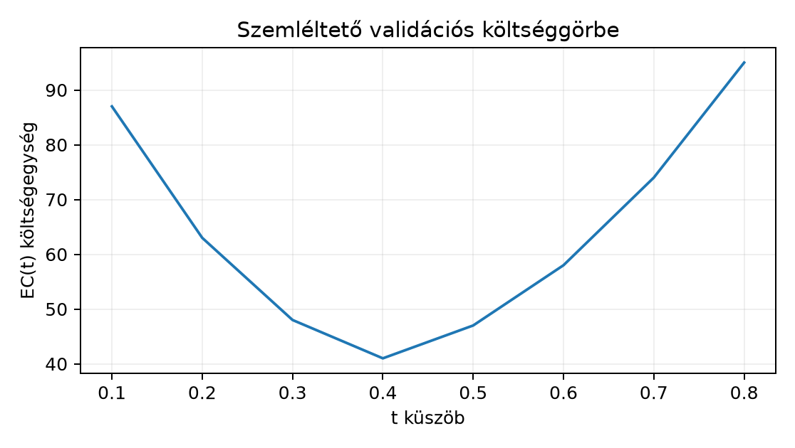

Belépő · [BŐVÍTŐ MODUL] · szint: haladó · idő: 90 perc · eszköz: scikit-learn, NumPy
Előfeltétel: 24.3. alfejezet · Célkészség: VI. ellenőrző pont: szivárgásmentes modellkísérlet · Kimenet: projektartefaktum és ellenőrzött futtatási jegyzőkönyv.
A VI. ellenőrző pont egyetlen, teljes modellkísérletet zár le. A
Northstar laborban megint a rendeléskori késésbecslés a feladat: a
lab/data/orders.csv és lab/data/customers.csv
állományokból becsüljük annak valószínűségét, hogy egy rendelés
kézbesítése meghaladja az ígért promised_days = 7 napot. A
megfigyelési egység egy rendelés (order_id), a cél
target_late, amely 1, ha delivery_days > 7,
különben 0. A modell csak a rendelés pillanatában ismert oszlopokat
használhatja. A korábbi s081–s092 egységek
tanították a split, pipeline, küszöb és kalibráció egyes darabjait; itt
az a kérdés, hogy a darabokból egyetlen, naplózott, szivárgásmentes
kísérlet áll-e össze.
Elvárt kimenet: modellkártya, kísérleti napló, mentett pipeline-artefaktum, valamint egy szándékosan rossz leakage-megoldás írásos kritikája. Ellenőrzési feltétel: a teszt részt pontosan egyszer használjuk a záróértékelésre, a prediktorokból minden tiltott oszlop hiányzik, és az artefaktumból újratölthető modell ugyanazt a predikciót adja. Induló becslésként a tanuló mondja meg, miért nem elég a „0.77 AUC” szám; a megoldásban a protokollt is rögzíteni kell.
Baseline. Az alapmodell (baseline) a legegyszerűbb
olyan szabály, amely nem használ jövőbeli adatot. A
DummyClassifier(strategy="prior") mindig a tanítórészen
megfigyelt késési arányt mondja minden rendelésre. ROC AUC-ja definíció
szerint 0.50, Brier-pontszáma pedig a referenciaérték
ahol
a célátlag a tanítórészen. Egy valódi modellnek ennél kisebb Brier-t és
0.50-nél nagyobb AUC-t kell adnia; ha nem, akkor a pipeline-ban hiba
van.
Preprocessing. A hiányzó értékek pótlása, a
numerikus oszlopok skálázása és a kategóriák one-hot kódolása mind a
tanítórészen belül tanul. A StandardScaler átlagát és
szórását tehát csak a belső tanítóhalmazon illesztjük; a valid és teszt
részt csak transzformáljuk. Ugyanez vonatkozik az imputerekre és a
OneHotEncoder kategória-készletére.
CV és search. A hiperparaméter-keresés
GridSearchCV-vel fut, az időrendet tisztelő
TimeSeriesSplit foldokkal. Az idősoron nem keverünk
véletlen foldokat, mert a jövőbeli rendelések tanítósorba kerülhetnének
(lásd s090). A keresés pontszáma a belső CV-ből származik;
ez modellválasztási pontszám, nem a végső teljesítmény becslése. A
keresés után a küszöböt külön validhalmazon rögzítjük, ahogy
s092 tanította.
Metrics. A valószínűségi modellt háromféleképpen ellenőrizzük: rangsorolási AUC, a ritka eseményhez illő average precision, és a Brier-pontszám ahol a prediktált valószínűség, a tényleges cél, a kiértékelt sorok száma. Kézi példa: , esetén
A sklearn.metrics.brier_score_loss(y, p) ugyanezt az
értéket adja; a kézi és a Python-számítás egyezése az ellenőrző
invariáns.
Az üzleti döntési költséget a validhalmazon rögzített küszöb mellett
képlettel számoljuk, ahol a küszöb, és a hamis pozitív és hamis negatív darabszám, és pedig pénzben kifejezett költségegység. Itt , , mert egy késés elmulasztása drágább, mint egy felesleges figyelmeztetés.
Calibration. A kalibrációs görbe azt mutatja, hogy amikor a modell valószínűséget mond, az esemény átlagos gyakorisága is közel . A Brier azt méri, mennyire pontos ez a valószínűség. A kalibráció csak a validhalmazon értékelhető, és a teszt előtt kell igazolni, hogy a modell valószínűségeit gyakoriságként lehet használni.
Artifact. A mentett artefaktum a pipeline objektum,
a modellkártya és a kísérleti napló. Az artefaktum nem önmagában a
joblib fájl; a protokoll nélkül a fájl nem reprodukálható,
és a betöltés csak megbízható környezetben történhet.
A következő kódot a lab projektgyökérből futtatva, a szállított
orders.csv és customers.csv mellett, a
modellkártya és a napló előállítható. A kód itt nem volt
futtatva; a print sorokban szereplő számok
szemléltető példák, nem mért laboreredmények. A labban a futásnak kell a
naplót ténylegesen előállítania.
"""checkpoint6_experiment.py: szivárgásmentes Northstar modellkísérlet."""
import json
from pathlib import Path
import numpy as np
import pandas as pd
from joblib import dump
from sklearn.base import clone
from sklearn.calibration import calibration_curve
from sklearn.compose import ColumnTransformer
from sklearn.dummy import DummyClassifier
from sklearn.impute import SimpleImputer
from sklearn.linear_model import LogisticRegression
from sklearn.metrics import (
average_precision_score,
brier_score_loss,
roc_auc_score,
)
from sklearn.model_selection import GridSearchCV, TimeSeriesSplit
from sklearn.pipeline import Pipeline
from sklearn.preprocessing import OneHotEncoder, StandardScaler
# --- 1. Betöltés, cél és feature-ek kialakítása -------------------------
customers = pd.read_csv("customers.csv", parse_dates=["signup_date"])
orders = pd.read_csv(
"orders.csv",
parse_dates=["order_ts", "actual_delivery_at", "label_available_at"],
)
df = orders.merge(customers, on="customer_id", how="left")
df = df.sort_values("order_ts").reset_index(drop=True)
# Rendelés pillanatában ismert feature-ök:
df["account_age_days"] = (
df["order_ts"].dt.tz_localize(None) - df["signup_date"]
).dt.days
# A cél. A target_late oszlopot soha nem tesszük predictorba.
df["target"] = (df["delivery_days"] > df["promised_days"]).astype(int)
numeric_features = [
"distance_km",
"priority_flag",
"basket_minor",
"quantity_sum",
"account_age_days",
]
categorical_features = ["segment", "region", "acquisition_channel"]
forbidden_predictors = [
"order_id",
"customer_id",
"delivery_days",
"actual_delivery_at",
"label_available_at",
"target_late",
"target",
]
# --- 2. Időbeli split label-availability szűréssel --------------------
cutoff = pd.Timestamp("2025-05-01T00:00:00+00:00")
train_mask = (df["order_ts"] < cutoff) & (df["label_available_at"] < cutoff)
test_mask = df["order_ts"] >= cutoff
purged_mask = (df["order_ts"] < cutoff) & (df["label_available_at"] >= cutoff)
data = df[~purged_mask].copy()
X = data[numeric_features + categorical_features]
y = data["target"]
X_train_all = X[train_mask[~purged_mask]].copy()
y_train_all = y[train_mask[~purged_mask]].copy()
X_test = X[test_mask[~purged_mask]].copy()
y_test = y[test_mask[~purged_mask]].copy()
print(
f"train={len(X_train_all)}, test={len(X_test)}, "
f"purged={int(purged_mask.sum())}"
)
# --- 3. Belső train + valid a küszöbhöz és kalibrációhoz ---------------
# A train végét időrendben validként különítjük el.
n_valid = int(len(X_train_all) * 0.2)
X_inner = X_train_all.iloc[:-n_valid]
y_inner = y_train_all.iloc[:-n_valid]
X_valid = X_train_all.iloc[-n_valid:]
y_valid = y_train_all.iloc[-n_valid:]
# --- 4. Baseline: mindig a train átlagát mondja -----------------------
baseline = DummyClassifier(strategy="prior").fit(X_inner, y_inner)
baseline_prob = baseline.predict_proba(X_valid)[:, 1]
baseline_brier = brier_score_loss(y_valid, baseline_prob)
print(f"baseline_valid_brier={baseline_brier:.3f}")
# --- 5. Pipeline és hiperparaméter-keresés a belső train-en ------------
num_pipe = Pipeline(
[
("imputer", SimpleImputer(strategy="median")),
("scaler", StandardScaler()),
]
)
cat_pipe = Pipeline(
[
(
"imputer",
SimpleImputer(strategy="constant", fill_value="missing"),
),
("onehot", OneHotEncoder(handle_unknown="ignore")),
]
)
prep = ColumnTransformer(
[
("num", num_pipe, numeric_features),
("cat", cat_pipe, categorical_features),
]
)
model = Pipeline(
[("prep", prep), ("clf", LogisticRegression(max_iter=2000))]
)
param_grid = {"clf__C": [0.1, 0.3, 1.0, 3.0]}
search = GridSearchCV(
model,
param_grid,
cv=TimeSeriesSplit(n_splits=3),
scoring="average_precision",
refit=True,
)
search.fit(X_inner, y_inner)
print(search.best_params_, f"inner_cv_ap={search.best_score_:.3f}")
# --- 6. Küszöbválasztás a validhalmazon ---------------------------------
prob_valid = search.best_estimator_.predict_proba(X_valid)[:, 1]
cost_fp, cost_fn = 1.0, 5.0
grid_t = np.linspace(0.1, 0.9, 41)
best_cost = np.inf
best_t = 0.5
for t in grid_t:
pred = (prob_valid >= t).astype(int)
fp = ((pred == 1) & (y_valid == 0)).sum()
fn = ((pred == 0) & (y_valid == 1)).sum()
cost = cost_fp * fp + cost_fn * fn
if cost < best_cost:
best_cost, best_t = cost, t
print(f"chosen_threshold={best_t:.2f}, valid_cost={best_cost:.1f}")
# --- 7. Kalibráció a validhalmazon --------------------------------------
prob_true, prob_pred = calibration_curve(y_valid, prob_valid, n_bins=5)
print("calibration_curve", list(zip(prob_pred.round(2), prob_true.round(2))))
# --- 8. Végleges illesztés a teljes trainen, egyszeri teszt --------------
final_pipeline = clone(search.best_estimator_)
final_pipeline.fit(X_train_all, y_train_all)
prob_test = final_pipeline.predict_proba(X_test)[:, 1]
pred_test = (prob_test >= best_t).astype(int)
# A tesztet csak itt használjuk, egyszer.
test_auc = roc_auc_score(y_test, prob_test)
test_ap = average_precision_score(y_test, prob_test)
test_brier = brier_score_loss(y_test, prob_test)
test_fp = ((pred_test == 1) & (y_test == 0)).sum()
test_fn = ((pred_test == 0) & (y_test == 1)).sum()
test_cost = cost_fp * test_fp + cost_fn * test_fn
print(
f"test_auc={test_auc:.3f}, test_ap={test_ap:.3f}, "
f"test_brier={test_brier:.3f}, test_cost={test_cost:.1f}"
)
# --- 9. Artifact-mentés ---------------------------------------------------
out = Path("artifacts/checkpoint6")
out.mkdir(parents=True, exist_ok=True)
dump(final_pipeline, out / "model.joblib")
model_card = {
"model_id": "northstar-late-v6",
"task": "predict late delivery >7 days at order time",
"data": "orders.csv, customers.csv",
"cutoff": cutoff.isoformat(),
"split": {
"train": len(X_train_all),
"valid": len(X_valid),
"test": len(X_test),
"purged": int(purged_mask.sum()),
},
"features": {
"numeric": numeric_features,
"categorical": categorical_features,
},
"forbidden_predictors": forbidden_predictors,
"preprocessing": {
"numeric_imputer": "median",
"categorical_imputer": "constant missing",
"scaler": "standard fit on inner train only",
},
"search": {
"grid": param_grid,
"scoring": "average_precision",
"cv": "TimeSeriesSplit(n_splits=3)",
},
"threshold": {"value": float(best_t), "cost_fp": 1.0, "cost_fn": 5.0,
"chosen_on": "valid"},
"metrics_test": {
"roc_auc": test_auc,
"average_precision": test_ap,
"brier": test_brier,
"expected_cost": test_cost,
},
"leakage_critique": (
"A delivery_days prediktorként való használata tilos. "
"A teljes adatra illesztett anomaly_score szintén tilos, "
"mert a jövő rendeléseit ismerné."
),
}
with open(out / "model_card.json", "w", encoding="utf-8") as f:
json.dump(model_card, f, indent=2, ensure_ascii=False)A kísérleti napló egy sora például így néz ki (a számok illusztrációk):
run_id,cutoff,n_train,n_valid,n_test,n_purged,model,best_params,valid_brier,threshold,test_auc,test_ap,test_brier,test_expected_cost,git_sha,sklearn_version,python_version,timestamp
r006,2025-05-01T00:00:00+00:00,1432,358,532,78,LogisticRegression,"{clf__C: 0.3}",0.161,0.34,0.771,0.46,0.163,38,abc123,1.5.2,3.12.0,2026-10-20T12:00:00ZA küszöbválasztás alakja így illusztrálható; a pontok a fenti példaadatokból számított szemléltető értékek:

A kód kimenetében a legfontosabb, hogy a belső CV-pontszámot ne
nevezzük záróeredménynek. Az inner_cv_ap a
paraméterkereséshez vezető rangsorolási pontszám; a validhalmaz a küszöb
és a kalibráció színtere; a test_* mérőszámok a
modellkártyában rögzített, egyszeri független értékelés. A
test_brier akkor értelmezhető jól, ha a
baseline_brier-rel együtt közöljük: ha a modell Brier-je
közel van a baseline-hoz, a modell alig tesz hozzá a konstans
kockázathoz.
A calibration_curve lista pontpárjai azt mutatják, hogy
a prediktált bin-középpontok körül a tényleges gyakoriság hogyan alakul.
A fenti fiktív adatokban a pontok a diagonális közelében haladnak, tehát
a valószínűség gyakoriságként értelmezhető. A valid-költséggörbe
minimuma adja a befagyasztott küszöböt; a teszt
expected_cost ezzel a küszöbbel számolandó, és nem a teszt
utólagos optimalizálásából.
A mentett model.joblib visszaolvasása után a teszt
predikciók bitenként ugyanazok, ha az input oszlopok, a sklearn-verzió
és a python-verzió azonos. A naplóban a git_sha nélkül a
kódbeli változtatás utólag nem igazolható.
Értelmezés. A fenti szemléltető naplóban a belső
CV average_precision 0.50, a valid AP 0.44, a teszt AP
pedig 0.46. Miért nem mondhatjuk, hogy a teszt rossz, mert a belső CV
magasabb volt? Mi a záró érvényes szám, és melyik rész szolgál
modellválasztásra?
Implementálás. A kódban a küszöbválasztás a
validhalmazon történik, de a best_cost kezdeti értéke
np.inf. Írd át a küszöbválasztást úgy, hogy az eredményt
threshold.json néven is mentse, majd ellenőrizd, hogy a
mentett best_t visszaolvasva pontosan a választott érték.
Mi a minimumhely ellenőrzése, ha a grid_t rácspontjai nem
tartalmazzák a folytonos optimumot?
Hibadiagnózis. Egy hallgató a következő sort
illesztette a split elé: scaler.fit(X) a teljes adatra,
utána a pipeline-ban StandardScaler() transzformál mindent.
A teszt AUC 0.81, a Brier 0.141. Milyen szivárgás történt, miért
optimista ez a szám, és hogyan javítsd a kódot?
Transzfer. A következő újratanítási futtatásban
a cutoff 2025-08-01T00:00:00+00:00. Mit kell módosítani a
train/test/purged szűrésben? Az s095-ből származó
anomáliarangsort is feature-ként akarjuk használni. Miért tilos a teljes
orders.csv-re illesztett IsolationForest
pontszám, és milyen időhelyes módon lehetne integrálni?
1. megoldás. A belső CV-pontszám a kis
tanítóhalmazon, sok modellváltozat közötti választásra szolgál. A
keresési eljárás a legjobb pontszámú konfigurációt választja, ezért a
kiválasztott modell belső pontszáma felfelé torzított; a valid és a
teszt kevésbé ismert ablakok, ráadásul a késési arány szezonálisan
változhat. A záró érvényes szám a test_ap 0.46. A belső CV
csak a C paraméter kiválasztását támogatta. Azt is
ellenőrizni kell, hogy a tesztet valóban egyszer használtuk; ha a
test_ap nem érvényes, a többi tesztmutató sem az.
2. megoldás. A küszöbválasztásnál a
grid_t minden elemére kiszámítjuk a költséget, és a
legkisebb költségű rácspontot választjuk. A mentés:
threshold_artifact = {
"threshold": float(best_t),
"valid_cost": float(best_cost),
"cost_fp": cost_fp,
"cost_fn": cost_fn,
"grid_t_min": float(grid_t.min()),
"grid_t_max": float(grid_t.max()),
}
with open(out / "threshold.json", "w", encoding="utf-8") as f:
json.dump(threshold_artifact, f, indent=2)Visszaolvasás után az
float(threshold_artifact["threshold"]) == float(best_t)
értéknek True-nak kell lennie; a lebegőpontos ábrázolás
miatt tolerancia
,
mert ugyanazt az np.float64-et mentjük. A rácspontok
közötti folytonos minimumot például np.searchsorted-del
szűkítő aranymetszéssel lehetne finomítani; a valódi döntéshez azonban a
rács felbontása elegendő, mert a küszöb működési pont nem érzékeny 0.01
alatt.
3. megoldás. A scaler.fit(X) a teljes
adatra illeszkedik, tehát a teszt sorok átlaga és szórása is bekerül a
skálázóba. A validálás és a teszt során a jövő statisztikáját
használjuk, vagyis a standardizálás információs szivárgást okoz. A teszt
AUC és Brier ezért optimista lehet; a modell a valós rendelési
pillanatban nem ismerné a jövőbeli kosárértékek szórását. A javítás: a
ColumnTransformer csak X_inner-en, illetve a
végleges illesztésnél csak X_train_all-on tanuljon; a
validot és tesztet soha ne illesszük a preprocessing illesztésébe.
Ellenőrzés: a prep.named_steps vagy a
ColumnTransformer.transform hívása előtt a fit
kizárólag a megengedett indexeken futott.
4. megoldás. Az új cutoff mellett a
train_mask = (order_ts < cutoff) & (label_available_at < cutoff)
és a purged_mask ugyanígy módosul. A
test_mask = order_ts >= cutoff most 2025. augusztus
1-től induló rendeléseket jelent. Az IsolationForest a
teljes adatra illesztett változatban a jövőbeli tesztrendeléseket is
ismerte volna, mert a pontszám a teljes faerdő sűrűségétől függ. Helyes
változat: az anomáliamodellt csak a train ablakra illesztjük, majd a
transform vagy score_samples lépést a tesztre
is alkalmazzuk. Ha a feature-t folyamatosan használni akarjuk, akkor az
illesztést időben gördülő ablakon, például az utolsó 30 nap rendelésein
kell megismételni, és a predikció mindig az adott pillanatban elérhető
ablakból származhat.
A leggyakoribb hibás mondat: „a modell 0.77 AUC-t ért el.” Protokoll
nélkül ez a szám nem tudományos eredmény. Képzeljünk el két laborfutást.
Az A futás valódi modellje az s082 szerinti pipeline-nal
0.77 AUC-t mér. A B futás véletlenül a delivery_days
oszlopot is beveszi a prediktorok közé; ez a modell 0.99 AUC-t ér. Ha a
naplóban csak a legjobb számot látjuk, a B futás nyer. Amint azonban a
modellkártya tartalmazza a tiltott prediktorok listáját, kiderül, hogy B
a jövőbeli kézbesítési időt ismerte, így a szám nem a rendelés
pillanatában elérhető tudást méri. Ugyanez a csapda a tesztet többször
használó kereséssel: a tesztből választott küszöb a záró
expected_cost-ot lefelé torzítja, és az egyetlen „jó” szám
mögül hiányzik a validálási döntés. Ezért az ellenőrző pont kimondja: a
protokoll előbb van, mint a szám. A számot a modellkártya és a napló
együtt teszi reprodukálhatóvá.
A szivárgásdetektor önmagában nem bizonyíték, ha soha nem bukik el.
Ezért a kísérlethez tartozik egy szándékosan szivárgó
kiadás is: ugyanaz a pipeline, ugyanazokkal a lépésekkel, de a
feature-lista kiegészítve a delivery_days és/vagy
target_late oszloppal. A detektor két szinten
ellenőriz:
FORBIDDEN = {"delivery_days", "actual_delivery_at", "label_available_at", "target_late"}
def assert_feature_contract(features):
leaked = set(features) & FORBIDDEN
if leaked:
raise ValueError(f"tiltott prediktor: {sorted(leaked)}")
def assert_asof(train, cutoff):
if (train["label_available_at"] >= cutoff).any():
raise ValueError("a tanítóban a cutoff után ismert címke van")A teszt két esete:
| Kiadás | Feature-lista | Elvárt viselkedés |
|---|---|---|
| tiszta | a nyolc engedett feature | assert_feature_contract átenged |
| szándékosan szivárgó | a nyolc feature + delivery_days |
assert_feature_contract ValueError-t
dob |
A pozitív kontroll akkor érvényes, ha a szivárgó kiadás elbukik a detektoron, még akkor is, ha a modell AUC-ja magasabb. A detektor és az as-of ellenőrzés együtt a modellkártya része; a jelentésben a tiszta kiadás eredménye mellett a szivárgó kiadás elutasítását is rögzíteni kell.
Önellenőrzéshez térjünk vissza s048 numerikus
ellenőrzési és s080 módszerválasztó jegyzőkönyvéhez: itt is
ugyanaz a logika. A Brier-képlet numerikusan kiszámítható a validáló
sorokra, a küszöbköltség a foldokon belül ellenőrizhető; a modellkártya
a split, a feature-lista és a végső zárómutató mellett legalább egy
érvényességi korlátot is nevez meg. A korlát lehet a kis tesztméret, az
egyetlen cutoff, a label-availability szűrés konzervativizmusa, vagy az,
hogy a modell nem terjed ki új ügyfélcsoportokra.
Az érintetlen tesztet egyszer, a végső modell és küszöb rögzítése után értékeljük. A modellkártyában jelöljük a címke rendelkezésre állásának határát és a betanítási cutoffot.
A VI. ellenőrző pont a szivárgásmentes modellkísérlet teljes
szerződését zárja. A Northstar-késésfeladaton időrendi train/test/purged
splitet, a belső trainen futó TimeSeriesSplit-keresést,
validon rögzített küszöböt és kalibrációt, majd egyszeri tesztértékelést
készítünk. A modellkártya rögzíti a tiltott prediktorokat, a
preprocessing tanítási pontját, a paraméterteret és a tesztmetrikákat; a
napló a környezetet, seedet és git-hash-et is tartalmazza. A legjobb
szám protokoll nélkül nem érvényes: a szándékos
delivery_days-szivárgás magas AUC-t adna, de a jövőt
ismerné. Következő alkalmazásként a s097 időhelyes
aggregátumokkal bővíti a feature-készletet ugyanezen predikciós
szerződés mellett.